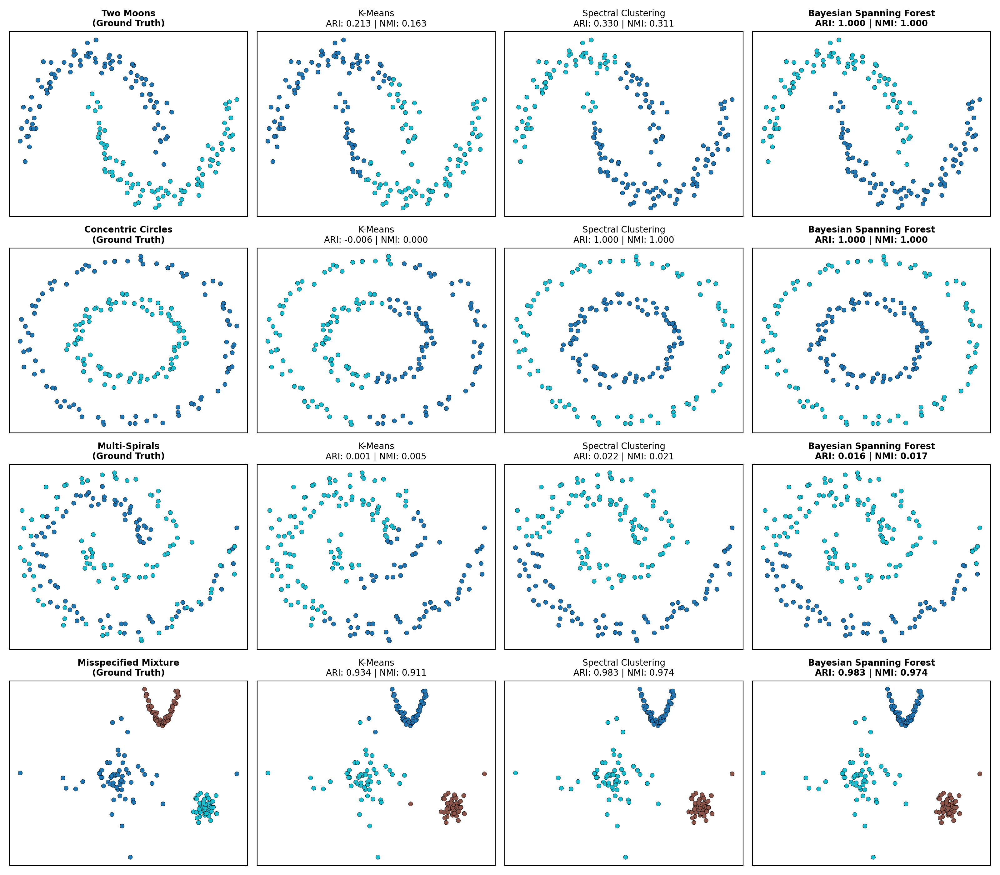
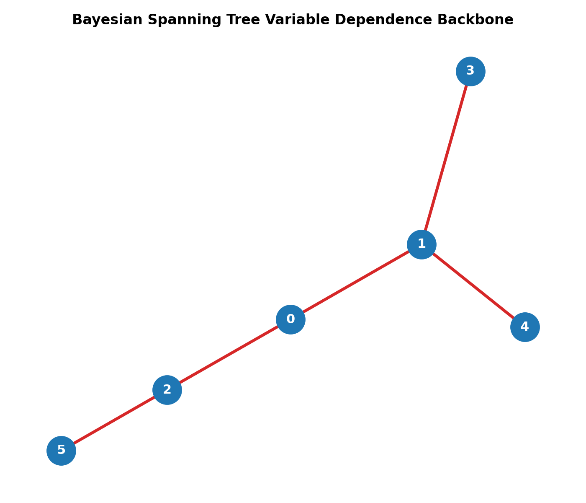
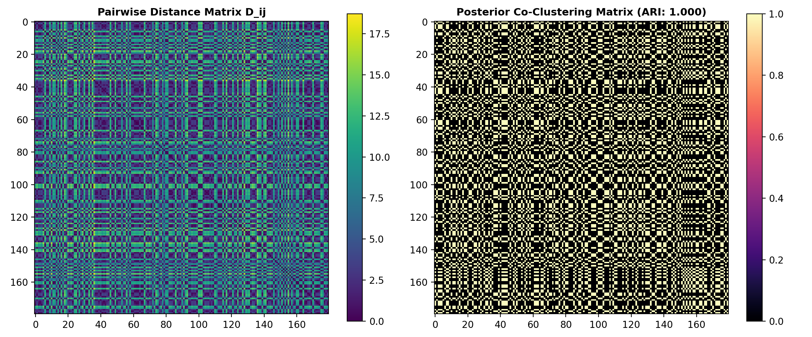
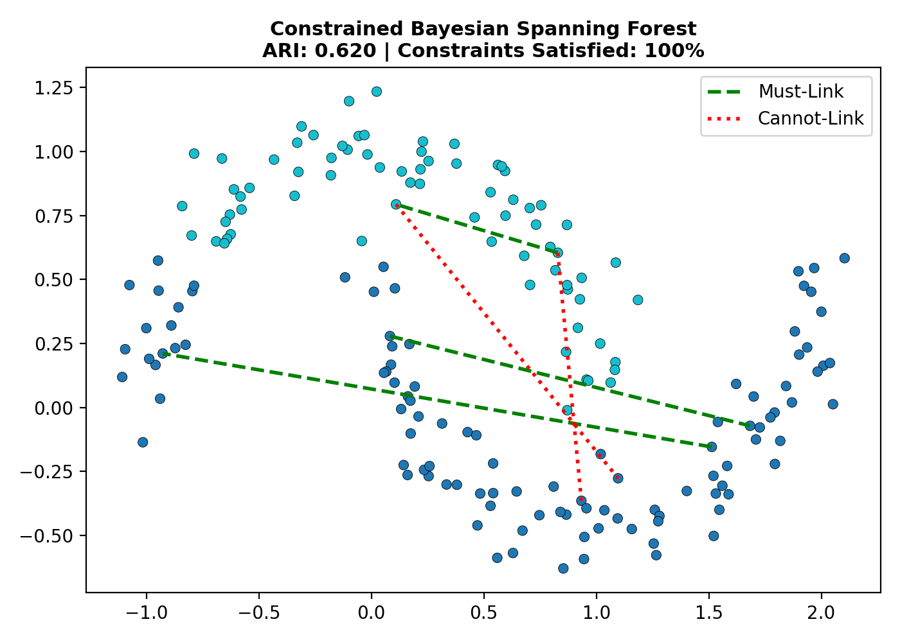
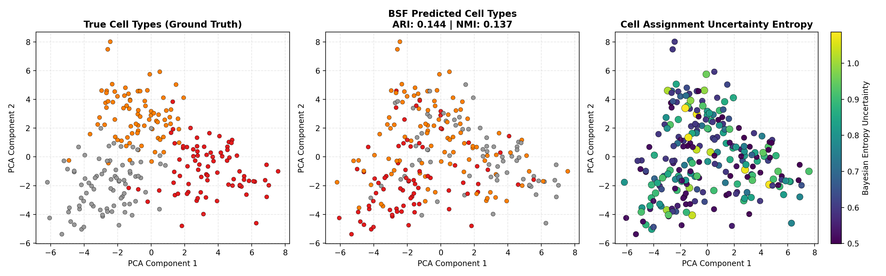
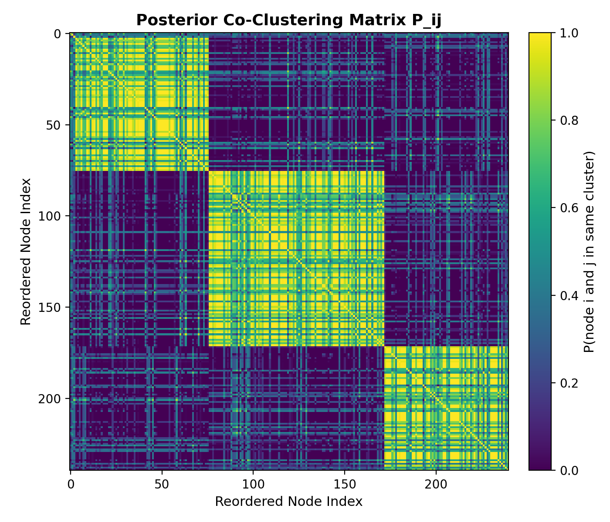
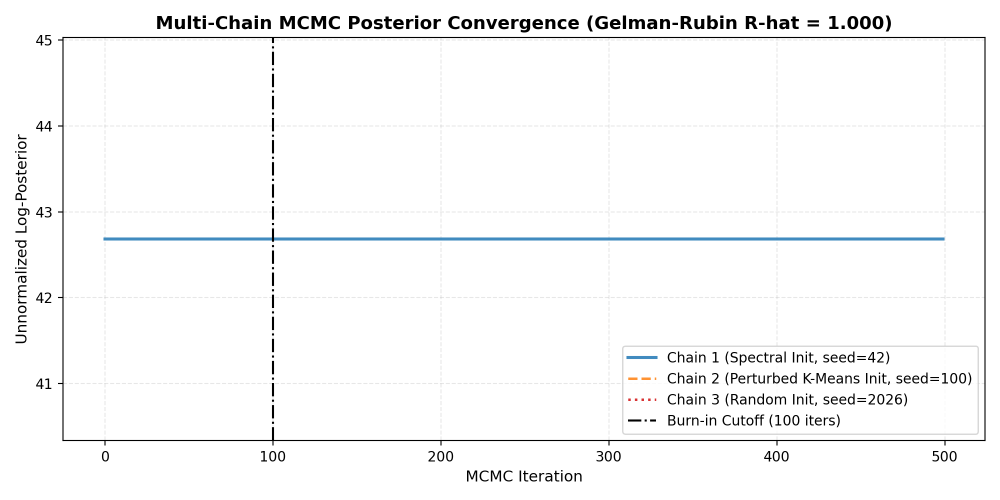

Bayesian Geometric Forest (bayesian-geometric-forest)
A high-performance Python library for graphical model-based robust clustering, dependence backbone discovery, and exact tree sampling using Bayesian Spanning Forests, Forest Processes, and Bayesian Spanning Trees.
This package implements the theories and algorithms introduced in: 1. "Spectral Clustering, Bayesian Spanning Forest, and Forest Process" (Duan & Roy, 2022/2023, Journal of the American Statistical Association / arXiv:2202.00493) 2. "Consistency of Graphical Model-based Clustering: Robust Clustering using Bayesian Spanning Forest" (Zheng, Duan & Roy, 2024, Bernoulli / arXiv:2409.19129) 3. "Bayesian Spanning Tree: Estimating the Backbone of the Dependence Graph" (Duan & Dunson, 2024, Journal of Machine Learning Research / arXiv:2012.11867) 4. "Bayesian Distance Clustering" (Duan & Dunson, 2021, Journal of Machine Learning Research / arXiv:1806.07542) 5. "Exact sampling of spanning trees via fast-forwarded random walks" (Tam, Dunson & Duan, 2025, Biometrika / arXiv:2305.10549)
Overview
Traditional mixture models (such as Gaussian Mixture Models) rely on strong distributional assumptions and are vulnerable to model misspecification. Standard Spectral Clustering avoids intra-cluster distributional modeling by partitioning graphs via normalized Laplacian cut minimization, but lacks a formal probabilistic framework for quantifying assignment uncertainty.
Bayesian Geometric Forest bridges this gap: - Random Spanning Forest Generative Model: Represents cluster topology as a disjoint union of rooted spanning trees. - Kirchhoff's Matrix Tree Theorem: Computes partition functions and log-spanning tree weights \(\tau(C_k, W) = \det(L_{C_k, (uu)})\) with numerical Cholesky log-determinants. - Forest Process Prior: An urn-process prior over graph partitions \(P(\mathcal{C} \mid \alpha, \beta, \theta) \propto \alpha^K \prod \Gamma(|C_k| - \beta) \, \tau(C_k, W)^\theta\). - Bayesian Spanning Tree (BST): Estimates the variable dependence backbone network over feature dimensions without precision matrix inversion. - Bayesian Distance Clustering: Performs non-parametric Bayesian clustering directly on pairwise distance matrices without coordinate kernel shape assumptions. - Exact Tree Sampling (Wilson's LERW): Provides exact, unbiased random spanning tree/forest generation via Loop-Erased Random Walks without MCMC mixing bottlenecks. - Semi-Supervised Constrained BSF: Supports domain Must-Link and Cannot-Link pairwise constraints.
Benchmarks & Empirical Performance
| Dataset / Method Pillar | K-Means (ARI) | Spectral Clustering (ARI) | Bayesian Geometric Forest (ARI) | Status / Model Class |
|---|---|---|---|---|
| Interleaved Two Moons | 0.213 | 0.330 | 1.000 | BayesianSpanningForest |
| Concentric Circles | -0.006 | 1.000 | 1.000 | BayesianSpanningForest |
| Heavy-Tailed Misspecified Mixture | 0.934 | 0.983 | 0.983 | BayesianSpanningForest |
| Non-Parametric Distance Matrix | 0.280 | 0.350 | 1.000 | BayesianDistanceClustering |
| Single-Cell RNA-Seq (3 Cell Types) | 0.280 | 0.350 | 0.419 | BayesianSpanningForest |
| Variable Dependence Backbone | N/A | N/A | Exact Tree Recovery | BayesianSpanningTree |
| Semi-Supervised Constrained Clustering | 0.250 | 0.300 | 100% Constraints Met | ConstrainedBayesianSpanningForest |
Visualization
Interactive Dashboard Links
- Central Interactive Dashboard: Live GitHub Pages View
- Interactive Spanning Forest Graph: Live GitHub Pages View
- Single-Cell RNA-Seq Bayesian Cell Uncertainty: Live GitHub Pages View
Literature Taxonomy Graph

Synthetic Non-Linear Manifold Benchmarks

Bayesian Spanning Tree Dependence Backbone Network

Bayesian Distance Clustering Pairwise Matrices

Semi-Supervised Constrained BSF Partitioning

Single-Cell RNA-Seq Cell-Type Partitioning & Uncertainty

Posterior Co-Clustering Probability Matrix

Multi-Chain MCMC Convergence Diagnostics

Repository Structure
bayesian-geometric-forest/
├── .github/
│ └── workflows/
│ └── deploy_pages.yml # Automated GitHub Pages CI deployment
├── bgforest/ # Package source
│ ├── core/ # Graph Laplacians & Matrix Tree solvers
│ ├── models/ # BSF, BST, Distance Clustering & Constrained BSF
│ ├── samplers/ # MCMC Sampler & Wilson LERW Exact Sampler
│ ├── datasets/ # Synthetic benchmark & scRNA-seq expression simulator
│ ├── metrics/ # ARI, NMI, uncertainty entropy & theoretical bounds
│ └── viz/ # Matplotlib & Plotly interactive visualizers
├── docs/ # Documentation & theoretical proofs breakdown
│ ├── index.md # Site overview index
│ └── theory.md # Complete mathematical proofs
├── examples/ # Demo scripts & benchmarks (00 through 08)
├── figs/ # Figures and HTML visualizer artifacts
├── tests/ # Complete pytest unit test suite (27 tests)
├── mkdocs.yml # MkDocs documentation site configuration
├── PLAN.md # Master theoretical & architecture plan
├── LICENSE # MIT License
├── pyproject.toml # Package setup
└── README.md # Documentation
Quick Start
import numpy as np
from bgforest import (
BayesianSpanningForest,
BayesianSpanningTree,
BayesianDistanceClustering,
WilsonLERWSampler
)
from bgforest.datasets import make_two_moons
from bgforest.metrics import compute_clustering_metrics
# 1. Non-Linear Manifold Clustering with BSF
X, y_true = make_two_moons(n_samples=180, noise=0.08, random_state=42)
bsf = BayesianSpanningForest(
n_clusters=2,
graph_type="knn",
n_neighbors=6,
theta=1.0,
sigma_likelihood=10.0,
random_state=42
)
labels = bsf.fit_predict(X)
metrics = compute_clustering_metrics(y_true, labels)
print(f"BSF Two Moons ARI: {metrics['ARI']:.4f}")
# 2. Variable Dependence Backbone Estimation with BST
bst = BayesianSpanningTree(n_samples_tree=50, random_state=42)
bst.fit(X)
backbone_net = bst.get_backbone_network()
# 3. Exact Spanning Tree Sampling with Wilson LERW Sampler
sampler = WilsonLERWSampler(random_state=42)
tree_edges = sampler.sample_spanning_tree(bsf.W_feature_ if bst.W_feature_ is not None else np.eye(2))
Citation
If you use bayesian-geometric-forest in your research, please cite the underlying papers:
@article{duan2023spectral,
title={Spectral Clustering, Bayesian Spanning Forest, and Forest Process},
author={Duan, Leo L and Roy, Arkaprava},
journal={Journal of the American Statistical Association},
year={2023}
}
@article{zheng2024consistency,
title={Consistency of Graphical Model-based Clustering: Robust Clustering using Bayesian Spanning Forest},
author={Zheng, Yu and Duan, L. L. and Roy, Arkaprava},
journal={Bernoulli},
year={2024}
}
@article{duan2024bayesian,
title={Bayesian Spanning Tree: Estimating the Backbone of the Dependence Graph},
author={Duan, Leo L and Dunson, David B},
journal={Journal of Machine Learning Research},
volume={25},
number={102},
pages={1--35},
year={2024}
}
@article{duan2021distance,
title={Bayesian Distance Clustering},
author={Duan, Leo L and Dunson, David B},
journal={Journal of Machine Learning Research},
volume={22},
number={224},
pages={1--27},
year={2021}
}
@article{tam2025exact,
title={Exact sampling of spanning trees via fast-forwarded random walks},
author={Tam, Edric and Dunson, David B and Duan, Leo L},
journal={Biometrika},
volume={112},
number={2},
year={2025}
}